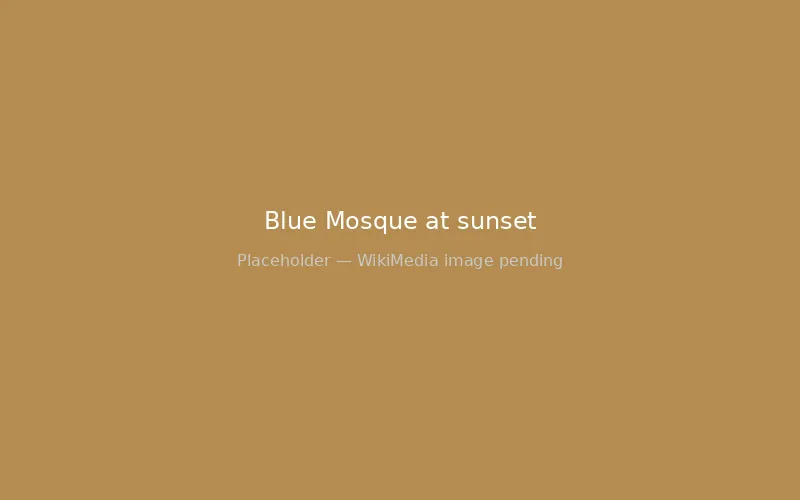
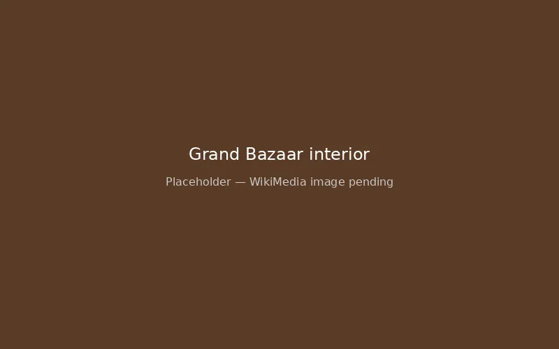
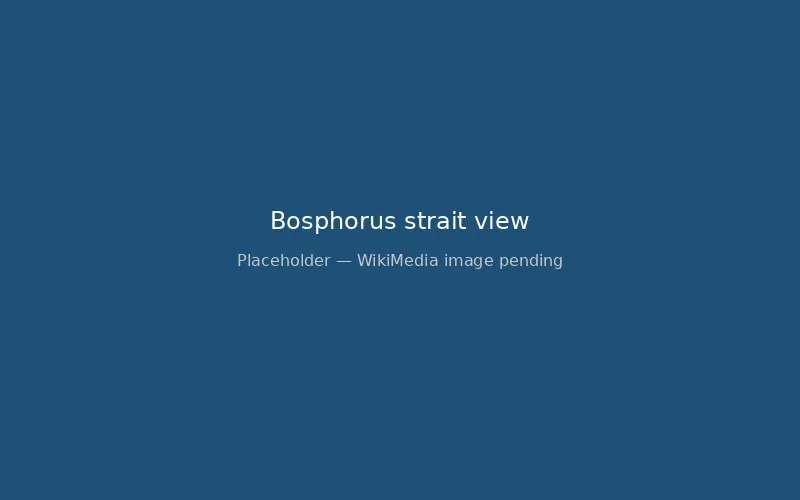
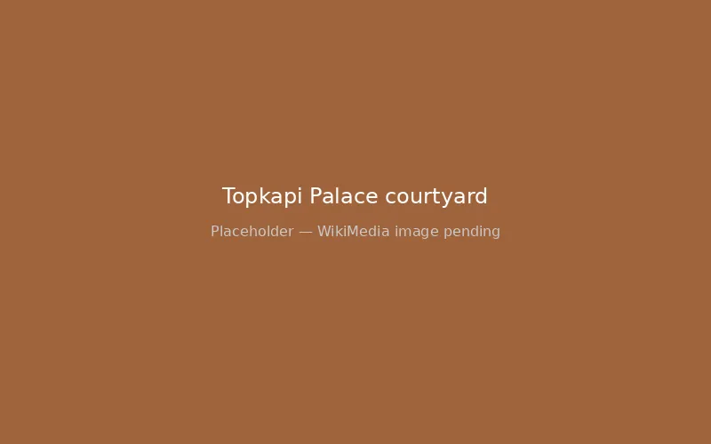
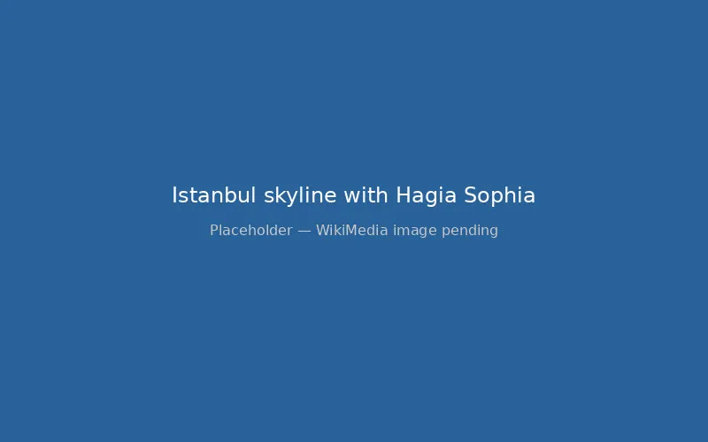
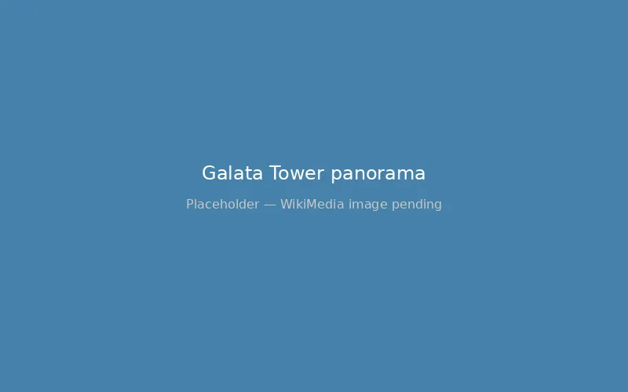
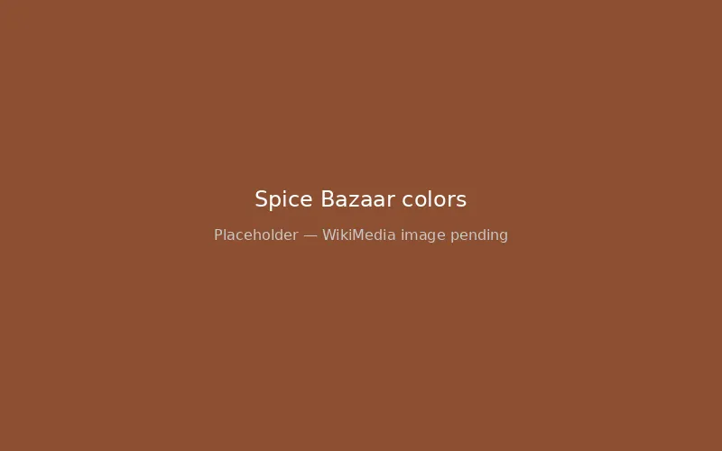
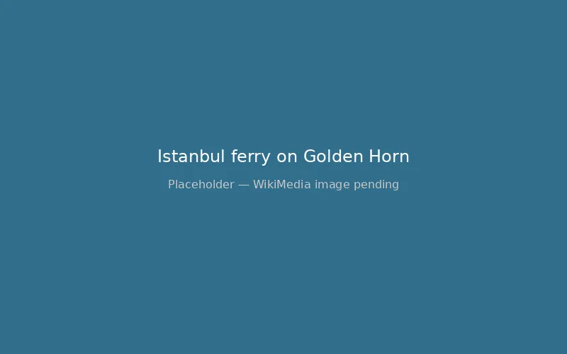

Istanbul: Standing Where Empires Rose and Fell
Region: Eastern Mediterranean | Type: Direct dock (Galataport) | Currency: Turkish Lira (cards accepted)

Last reviewed: February 2026

Photo: WikiMedia Commons (CC BY-SA)
Region: Eastern Mediterranean | Type: Direct dock (Galataport) | Currency: Turkish Lira (cards accepted)

Last reviewed: February 2026
The call to prayer echoed from a thousand minarets as our ship sailed into Istanbul, and I understood instantly why empires fought over this city for millennia. The Golden Horn stretched before us, the domes of the Hagia Sophia and Blue Mosque punctuating the skyline like exclamation points in stone. I stood on the upper deck with my coffee going cold in my hands, unable to look away. This is where East meets West — literally. The Bosphorus strait separates two continents, and I could see both of them from where I stood.

Constantinople. Byzantium. Istanbul. Three names for a city that refuses to be defined by any single era. The layers here run deep — Roman foundations beneath Byzantine churches beneath Ottoman palaces beneath modern Turkish life, all coexisting in glorious, chaotic harmony. I walked through Galataport and up the hill toward Galata Tower, and within ten minutes I was standing before a medieval Genoese watchtower with a panoramic view that took my breath away. The Golden Horn curved below me, ferries crisscrossing the water like busy insects, and across the strait the minarets of Sultanahmet rose against a sky that was turning gold. The sound of the city wrapped around me — car horns, seagulls, the distant rumble of the tram, a vendor calling out fresh simit prices — and I felt something shift inside me. This was not a place you visit. This was a place that visits you.
My day in Istanbul began at the Hagia Sophia, and nothing I had read or seen in photographs prepared me for the reality of it. Built in 537 AD as a cathedral, converted to a mosque after the Ottoman conquest of 1453, then a museum, and now a mosque again — it carries the weight of every era in its stones. I stepped inside and my neck craned upward at the massive dome that should not be possible, light streaming through windows built 1,500 years ago. The scale is staggering. Byzantine mosaics peek out from behind Ottoman calligraphy, and the air smells of old stone and burning incense. I stood in the nave for what felt like twenty minutes, just breathing and looking upward, watching the light move across the dome. Byzantine emperors worshipped here. Ottoman sultans prayed here. And now I stood where countless souls had looked upward seeking the divine, and I understood why they came.
The Blue Mosque sat across the square, its six minarets and cascade of domes designed to rival the Hagia Sophia. I removed my shoes, covered my shoulders, and stepped into one of the most beautiful prayer spaces I have ever seen. The interior is covered with more than 20,000 handmade Iznik tiles in shades of blue that give the mosque its name. The light filtering through 200 stained glass windows made the entire space glow. I sat on the carpet for a few minutes, listening to the quiet rustle of other visitors, feeling the cool air, letting the beauty of the place settle into me.

The Grand Bazaar nearly overwhelmed me — 4,000 shops spread across 61 covered streets, a labyrinth of carpets, spices, ceramics, gold, leather, and lamps. The smell of cinnamon and cardamom mixed with the leather of the jacket shops. Vendors called out from every doorway, offering tea and conversation before commerce. I bought a set of hand-painted ceramic bowls for about $15 — a fraction of what they would cost at home — and spent an hour just wandering the narrow alleys, touching the silk scarves, admiring the stacked towers of Turkish delight in every color. A shopkeeper named Mehmet insisted I sit and drink apple tea while he showed me his family's carpet collection. I did not buy a carpet, but I gained a friend and a story. He told me his grandfather had opened the shop in 1952, and his family had been weavers for six generations. The tea was sweet and the conversation was warm, and I left feeling like I had touched something real.
But the moment that changed everything for me was the ferry crossing to Kadıköy. I had almost skipped it — my feet ached, my camera was full, and I thought I had seen enough. However, something made me walk down to the Eminönü ferry terminal, tap my Istanbulkart, and step onto the boat. For twenty minutes I stood on the open deck as the ferry cut across the Bosphorus, and I watched Istanbul from the water — the minarets, the Galata Tower, the palaces along the shore — and I realized I was doing something that merchants, crusaders, pilgrims, and travelers had done for three thousand years. I was crossing between continents. The wind carried the salt smell of the sea, the sun was setting behind the European shore, and the Asian side was coming into focus ahead of me. Kadıköy was a revelation — real Istanbul without the tourist crowds. The food market had fresh fish, olives, cheeses, and baklava that made me close my eyes with every bite. I sat in a neighbourhood cafe and drank Turkish coffee the way it was meant to be made — thick, sweet, served with a glass of water and a square of lokum — and I watched ordinary life unfold around me.
I took the ferry back as night fell, and the city was transformed. The mosques were lit from within, the Bosphorus bridges glowed blue and green, and the water reflected a thousand lights. I walked slowly back through the streets to Galataport, my legs tired and my heart full, and I thought about all the people who had walked these same streets before me — emperors and beggars, saints and sinners, merchants and mystics. Istanbul does not let you forget them. It carries them in its stones, in the call to prayer that echoes five times a day, in the taste of the tea and the warmth of the hands that serve it. What I learned in Istanbul is this: a city that has survived 1,500 years of empires has something to teach about endurance, about beauty in the midst of chaos, about holding the ancient and the modern in the same breath. I left planning my return before the gangway was up.
Istanbul's Galataport opened in 2021 and immediately became one of the most impressive cruise terminals in the Mediterranean. The terminal is built underground — an engineering marvel that preserves the historic Karaköy waterfront above while ships dock at a modern, climate-controlled facility below. The terminal building has duty-free shopping, restaurants, currency exchange, and restrooms. Wheelchair accessible ramps and elevators connect the pier level to the street-level exit, making the transition smooth for guests with mobility concerns. Port security is efficient and standard; keep your ship card and photo ID ready. Once through the gates, you emerge onto a beautiful waterfront promenade lined with cafes and shops — a dramatic improvement over Istanbul's previous cruise facilities. The Galata Tower is visible from the port exit, and the tram stop for Sultanahmet is a short walk away. Wi-Fi is available in the terminal cafes, and several ATMs are located just outside the port gates.
Galataport puts you in the heart of Karaköy, within walking distance of the Galata Tower and Galata Bridge. However, the historic peninsula (Sultanahmet) with the Hagia Sophia, Blue Mosque, and Topkapi Palace is 3.5 km away — walkable but hilly, and better reached by tram or taxi:
Most cruise lines offer shuttle buses and organised ship excursions to Sultanahmet, typically running throughout the day. For independent travelers comfortable navigating a busy city, Istanbul's tram and ferry system is excellent, affordable, and surprisingly accessible. The T1 tram is step-free and wheelchair friendly. Ferries have accessible boarding ramps at most terminals. If you have mobility concerns and prefer a more structured visit, consider booking a private guide who can arrange accessible transport and plan a route that minimises steep hills and cobblestones.
Interactive map showing Galataport cruise terminal and Istanbul's key points of interest. Click any marker for details.
Galataport puts you right in the city, but be aware of the uphill walk to Istiklal Street and Taksim — it's steeper than it looks on the map. The historic peninsula (Sultanahmet) with the Blue Mosque and Hagia Sophia is a 15-minute taxi ride, not a comfortable walk from port. Mosque visits require covering shoulders and knees, and women need head coverings — carry a scarf rather than buying an overpriced one at the entrance. The Grand Bazaar is overwhelming by design; decide on a budget before you walk in.

Istanbul is one of those rare ports where you could spend a week and barely scratch the surface. Whether you book a ship excursion through your cruise line or explore independently, the key is prioritising ruthlessly — you cannot see everything in one port day. Here are the top options:
Ship excursion options: Most cruise lines offer half-day Sultanahmet tours (4-5 hours, typically €60-90 per person) covering the Hagia Sophia, Blue Mosque, and either Topkapi Palace or the Grand Bazaar. Full-day tours (6-8 hours, €90-140) usually include all four sites plus a lunch stop. The key advantage of a ship excursion is the guaranteed return to ship policy — if your tour runs late, the ship waits for you. For first-time visitors or anyone nervous about navigating Istanbul independently, this peace of mind is worth the premium price. Some lines also offer Bosphorus cruise excursions (€50-80) that show you both shores from the water.
Going independent: For experienced travelers comfortable with self-guided exploration, Istanbul is straightforward to navigate independently and significantly cheaper. The T1 tram from Galataport to Sultanahmet costs about $0.60 per ride. Hagia Sophia entry is free (it's a working mosque — modest dress required, shoes removed). Blue Mosque is also free. Topkapi Palace costs 750 Turkish Lira (about $22) for the main palace plus 350 Lira ($10) extra for the Harem section — absolutely worth it. The Grand Bazaar is free to enter, though your wallet may not escape unscathed. Independent visitors can linger where they choose, skip what doesn't interest them, and eat at neighbourhood restaurants where lunch costs $5-8 instead of $25+ at tourist spots. Book ahead if you want a private licensed guide — they typically charge €80-150 for a half-day and provide far more depth than group tours.
Beyond Sultanahmet: If you have already visited the major sites or have a full day, consider the Bosphorus ferry cruise (public ferry from Eminönü, about $3 round-trip, 90 minutes each way), the Chora Church (stunning Byzantine mosaics, $15 entry), or the Kadıköy food market on the Asian side (ferry $0.50, food market free). The Basilica Cistern near the Hagia Sophia ($15 entry) is an atmospheric underground water reservoir with 336 marble columns dating to 532 AD — cool, quiet, and fascinating.
Practical booking advice: If you plan to go independent, download the BiTaksi app before arrival for reliable taxi service. Ship excursions can be reserved onboard or online before your sailing — popular tours sell out during peak season from May through September, so book ahead rather than waiting until embarkation day. Whichever option you choose, bring water, wear comfortable walking shoes with good grip (Istanbul's cobblestones can be slippery), and carry a light scarf for mosque visits.
Honest tips before you step off the ship.
Istanbul is a city of steep hills, cobblestone streets, and uneven sidewalks. If you have mobility concerns or use a wheelchair, the tram system is your best friend — the T1 line is step-free and connects Galataport to Sultanahmet with accessible stations. The major mosques have accessible entrances at ground level. However, the Grand Bazaar's narrow aisles and the hills between Galata and Sultanahmet can be challenging for guests with limited mobility. Consider booking a private guide who knows accessible routes — they can arrange transport that minimises walking on uneven terrain.
Currency tip: Turkish Lira is the official currency, and the exchange rate has made Istanbul remarkably affordable for visitors paying in dollars or euros. A sit-down lunch in Sultanahmet runs 300-500 Lira ($9-15), while the same meal in Kadıköy costs 150-250 Lira ($4-7). A glass of fresh-squeezed pomegranate juice from street vendors costs 40-60 Lira ($1-2). Istanbulkart transit cards cost 50 Lira ($1.50) and each tram ride is about 17 Lira ($0.50). ATMs are plentiful throughout the city and near the port exit. Credit cards are accepted at most shops and restaurants, though smaller bazaar vendors prefer cash. Tipping is appreciated but not obligatory — rounding up or leaving 5-10% at restaurants is the local custom. At the Grand Bazaar, everything is negotiable; start at 40-50% of the asking price and work toward a fair middle ground.
Safety: Istanbul is generally safe for tourists. Normal precautions apply — watch for pickpockets in crowded areas like the Grand Bazaar and tram stations. Use registered taxis or the BiTaksi app rather than accepting rides from strangers near the port. The tourist areas around Sultanahmet and Galata are well-policed and accustomed to cruise visitors.




You can see the major sites — Hagia Sophia, Blue Mosque, Topkapi Palace, Grand Bazaar — in a full day, but it's rushed. Prioritise what matters most to you. Many cruisers do an overnight pre- or post-cruise to experience more. If you have only one day, I'd focus on Hagia Sophia + Blue Mosque + Grand Bazaar, and save Topkapi for a return visit.
Istanbul is generally safe for tourists. Normal precautions apply — watch for pickpockets in crowded areas, use registered taxis or apps, and be aware of common scams near tourist sites (shoe-shiners who "drop" a brush, overly helpful strangers near Istanbulkart machines). The tourist areas are well-policed and accustomed to international visitors.
Modest dress required — shoulders and knees covered for both genders. Women should bring a headscarf. The Blue Mosque provides coverings if needed, but bringing your own is easier and more comfortable. Shoes are removed at the entrance. Both the Hagia Sophia and Blue Mosque are free to enter.
Most ships dock at Galataport, a modern underground terminal in Karaköy that opened in 2021. The terminal is a 15-minute walk to Galata Bridge, and from there the T1 tram reaches Sultanahmet in 10-15 minutes (about 20 Lira / $0.60). The terminal has shops, restaurants, and currency exchange.
The T1 tram is step-free and wheelchair accessible, connecting Galataport to Sultanahmet. The major mosques have ground-level accessible entrances. However, many of Istanbul's streets are steep and cobblestoned, and the Grand Bazaar's narrow aisles can be difficult to navigate with a wheelchair. Galataport itself has excellent wheelchair accessibility with ramps and elevators from the pier to street level. A private guide familiar with accessible routes can help plan a comfortable visit.
All port images sourced from WikiMedia Commons under Creative Commons licenses.